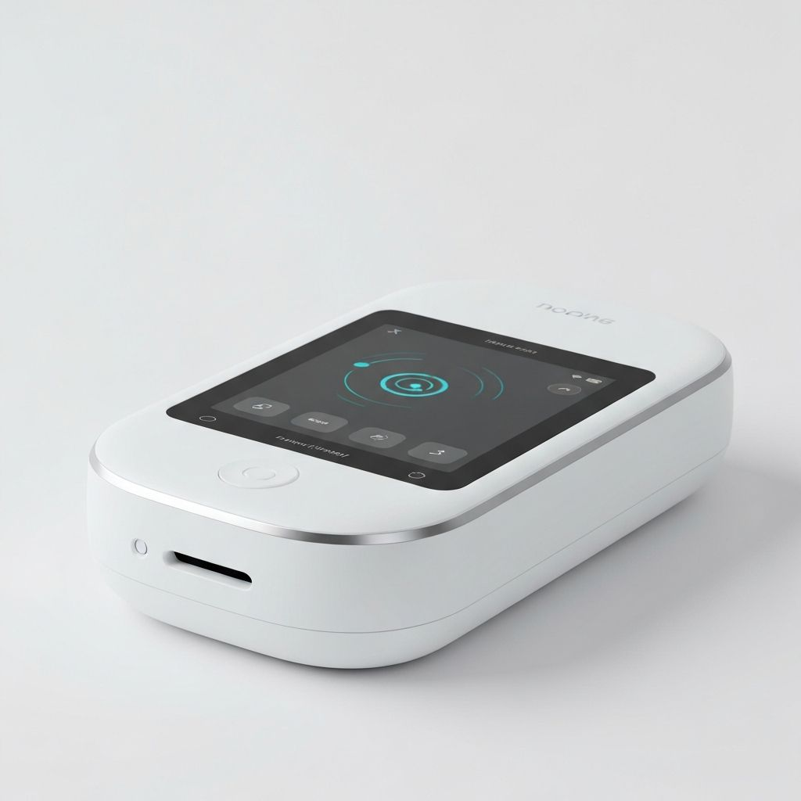
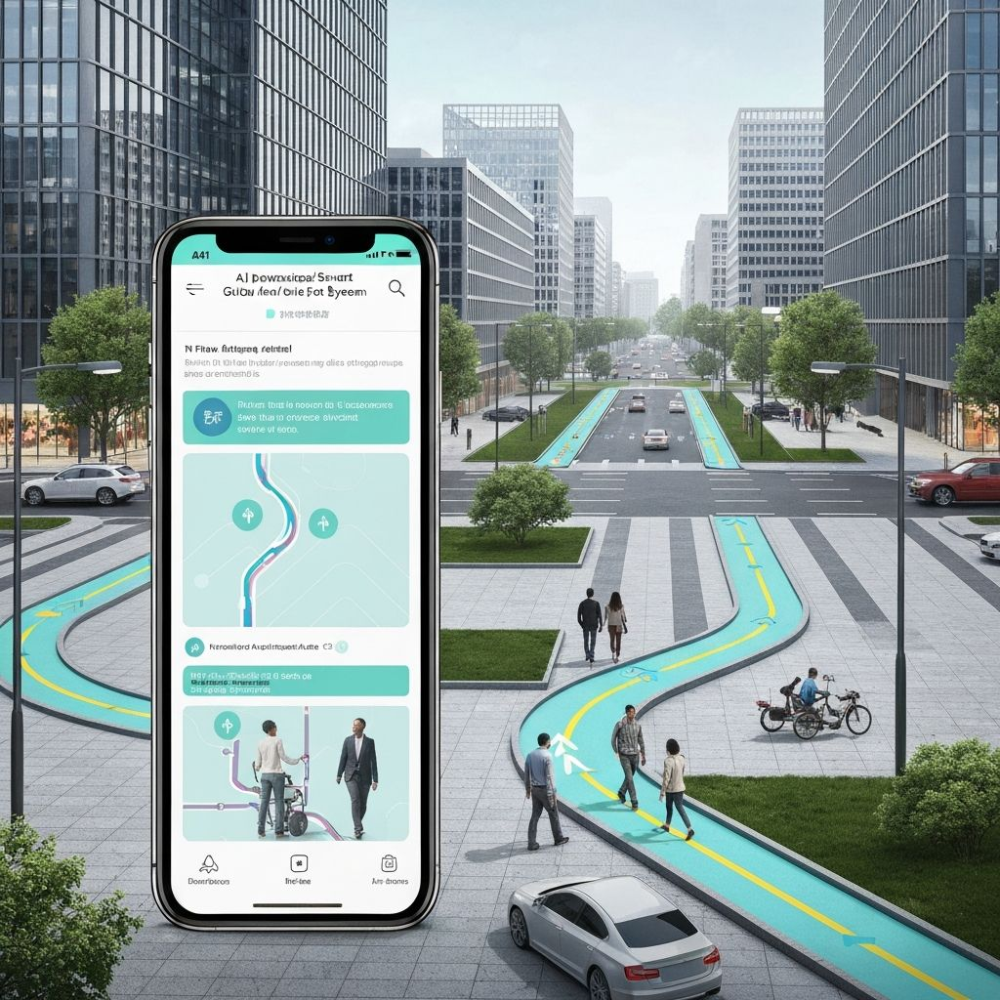

GLIDE es un dispositivo inteligente que ayuda a las personas ciegas a desplazarse con total independencia y facilidad

Por qué lo he incluido
He elegido este dispositivo ya que me parece un gran avance para las personas con ceguera , pues les puede ayudar para ser mas independientes
y no tener que depender de nadie ni de ningun perro guia , y si en un futuro la once lo sustituye por los perros guia seria incluso mas barato para la propia asociacion
Beneficios para las personas ciegas
Independencia para las personas ciegas
Les guia por la calle sin necesidad de ir acompañados

Pueden navegar por cualquier terreno
Cómo funciona
El servicio Sensible Wayfinding de Glidance es un sistema de inteligencia artificial avanzado, especializado en visión computacional y en interpretación del entorno, diseñado por Glidance. Este sistema integra todos los Glides activos, potenciando su capacidad para entender espacios complejos y guiarlos de manera eficiente.
Evolución histórica
Este dispositivo claramente sustituye al tradicional baston para ciegos , y es evidente que es una evolucion de este pues
a diferencia del tradicional reconoce el terreno y ayuda a la persona ciega a no tenerlo que reconocer ella el mismo por completo